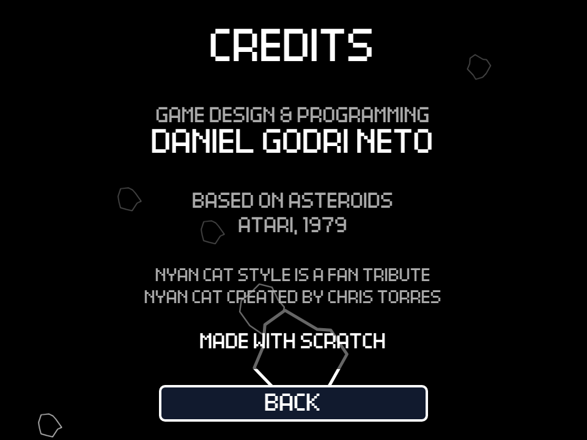

Apple Developer Academy · PUCPR · Atividade de Lógica de Programação
Asteroids no Scratch
Um remake do clássico da Atari de 1979, com um easter egg escondido, e o que construir ele me ensinou sobre lógica de programação.
Daniel Godri Neto
27 de setembro de 2026
1 · O jogoTelas, regras, controles e o easter egg
2 · A lógicaOs conceitos da aula dentro do jogo
3 · Os problemasBugs, soluções e o teste com meu irmão
4 · ReflexãoO que levo dessa experiência
Contexto
Por que o Asteroids
Escolhi o Asteroids porque gosto muito de jogar e porque é um jogo que jogo desde muito novo: foi meu pai quem me ensinou. Por isso eu não queria só "uma nave que atira em pedras". Quis refazer a versão de fliperama da forma mais fiel possível, com as regras originais: as pedras que se dividem, o disco voador que mira em você, o hiperespaço que às vezes falha e a vida extra a cada 10.000 pontos.
Também queria que o jogo tivesse cara de jogo de verdade, e não de exercício: menu, tela de configurações, créditos, recorde com as iniciais do jogador e sons em todas as ações.
Recorte do projeto: um Asteroids completo e fiel ao fliperama, feito só com os blocos do Scratch, com um segundo estilo visual escondido nas configurações.
Parte 1 · O jogo
As telas do jogo
Capturas do projeto rodando. O jogo tem três telas de menu e dois estilos visuais, que mudam toda a arte e todos os sons.

1. Menu. Jogar, Configurações e Créditos, com asteroides passando ao fundo e o recorde no topo.

2. Configurações. Som, volume em 4 níveis, setas ou WASD e o estilo visual. A ajuda de controles muda junto.

3. Créditos. Quem fez, o jogo original e a homenagem ao Nyan Cat.

4. Estilo clássico. O aviso "WAVE 1" e o "+20" subindo no lugar onde a pedra foi atingida e se dividiu.

5. Estilo nyan. A nave vira o Nyan Cat com rastro de arco-íris, e os asteroides viram novelos de lã.

6. Fim de jogo. No estilo nyan, o "GAME OVER" ganha um "meow...". Com recorde novo, o jogo pede as iniciais.
Parte 1 · O jogo (continuação)
Regras e controles
Como jogar
| Ação | Setas (padrão) | WASD |
|---|
| Girar a nave | ← e → | A e D |
| Acelerar | ↑ | W |
| Atirar | Espaço | Espaço |
| Hiperespaço | ↓ | S |
A nave tem inércia: ela continua deslizando depois de acelerar e perde velocidade aos poucos. Tudo que sai por uma borda da tela volta pela borda oposta, menos os tiros do jogador, que somem ao chegar na borda.
Regras do fliperama
- Ondas: 4 asteroides na primeira, depois 6, 8, 10 e no máximo 11, como no original.
- Asteroides que se dividem: o grande vira dois médios, o médio vira dois pequenos, e o pequeno é destruído. Valem 20, 50 e 100 pontos.
- Discos voadores: o grande (200 pontos) atira para qualquer lado; o pequeno (1.000 pontos) mira na nave.
- Tiros: um tiro por toque na tecla, no máximo 4 na tela ao mesmo tempo.
- Hiperespaço: teletransporta a nave para um lugar aleatório, mas em 1 de cada 8 vezes ele falha e a nave explode.
- Vidas: 3 no começo e uma vida extra a cada 10.000 pontos. Ao perder uma vida, a nave só volta quando o centro da tela está livre.
- Recorde: o jogo guarda a maior pontuação e pede suas iniciais, como nos fliperamas.
O easter egg: em Configurações, o estilo troca de "classic" para "nyan". A nave vira o Nyan Cat, os asteroides viram novelos de lã e o disco voador vira um cachorro num disco. Todos os sons também mudam. Desenhei os novelos e o cachorro no Aseprite. Gosto de esconder easter eggs nos meus projetos principalmente por causa do filme Jogador Nº 1.
Parte 2 · A lógica
Os conceitos da aula dentro do jogo
| Conceito | Onde aparece no jogo |
|---|
| Variáveis | score, lives, level e rocks controlam a partida. As configurações (sound, volume, controls, style) ficam em variáveis que a bandeira verde não zera, e por isso duram entre partidas. |
| Condicionais | Cada asteroide pergunta "estou tocando num tiro?", "na nave?", "no disco?". O tamanho decide a pontuação (se tier = 3, soma 20; se = 2, soma 50…). No fim da partida: se score > high score, o jogo pede as iniciais. |
| Laços de repetição | sempre: o laço principal da nave (girar, acelerar, atirar, checar colisão). repita até: o tiro anda até life chegar a 0. espere até: a próxima onda só começa quando rocks = 0. |
| Eventos e mensagens | O jogo é uma sequência de estados trocados por mensagens: menu → start game → new wave → game over → menu. Cada sprite só reage às mensagens que lhe interessam. |
| Clones | Asteroides, tiros, partículas de explosão, números de pontuação, rastro de arco-íris e botões são clones. Um asteroide atingido cria dois clones menores de si mesmo e depois se apaga. |
| Listas | As listas fx e pops funcionam como filas: cada explosão entra com x, y e tipo, e um único sprite vai tirando da fila e criando as partículas ou o número de pontos. |
| Operadores | O empuxo usa seno e cosseno da direção da nave; o atrito multiplica a velocidade por 0,98 a cada quadro; o resto da divisão alterna os quadros de animação. |
| Aleatoriedade | Posição e direção dos asteroides, a falha do hiperespaço (sorteio de 1 a 8) e o momento em que o disco aparece. |
| Blocos personalizados | A lógica fica dividida em blocos com nome, como steer, shoot, hyperspace, die, split e wrap. O placar é desenhado com a caneta por um bloco que roda "sem atualizar a tela", para não piscar. |
Exemplo: como um asteroide se divide
defina split
se award = 1 então some a pontuação do tamanho atual
se tier > 1 então
mude tier por -1 (fica um tamanho menor)
mude speed para speed × (1,2 a 1,6)
mude safe para 5 (proteção: ignora o tiro que o dividiu)
gire e crie clone de mim mesmo
gire para o outro lado e crie clone de mim mesmo
senão
mude rocks por -1 (era o menor: só desaparece)
apague este clone
É um exemplo pequeno, mas junta quase tudo da aula: variável, condicional, operador, aleatoriedade e clone. A variável safe surgiu de um bug: sem ela, os dois filhotes nasciam ainda encostados no tiro e se dividiam de novo no mesmo instante.
Parte 3 · Os problemas
Bugs, soluções e o teste com meu irmão
| Problema | O que acontecia | Como resolvi |
|---|
| Nave nascendo dentro de uma pedra | Depois de perder uma vida, a nave voltava no centro mesmo com um asteroide passando por ali, e explodia na hora. | Um sprite invisível em forma de círculo (SafeZone) vai para o centro, e a nave só volta quando ele não está tocando em nenhuma pedra, disco ou tiro, como no fliperama. |
| Clones recebendo mensagens | Quando uma mensagem como menu era enviada, todos os clones também a recebiam e executavam o mesmo código do original, criando asteroides e botões repetidos. | Cada clone guarda clone = 1. Os scripts de troca de tela começam com "se clone = 1, apague este clone", e só o original monta a tela nova. |
| Clones cortando o som | O som de explosão tocava no clone do asteroide, e quando o clone era apagado, o som parava no meio. | Todos os sons passaram a tocar de um único sprite, Sfx, que nunca é apagado. Os outros só mandam a mensagem, como sfx boom 1. |
| Clones escrevendo ao mesmo tempo | Várias pedras explodindo no mesmo quadro escreviam a posição na mesma variável, e as partículas apareciam no lugar errado. | Troquei a variável pela lista fx, uma fila: cada explosão entra na fila e é atendida na ordem. |
O teste com meu irmão
Meu irmão jogou e achou o jogo muito bom para um jogo de Scratch. Ele também encontrou um bug que eu não tinha visto: clicando muitas vezes seguidas no botão de estilo, o jogo começava a travar visualmente. Isso ajudou muito, porque é o tipo de coisa que quem fez o jogo não testa: eu clicava uma vez e seguia em frente. Com o bug encontrado, consegui corrigi-lo.
Polimento
Depois que o jogo já funcionava, acrescentei pequenos retornos visuais para cada ação: a pontuação aparece subindo no lugar onde a pedra ou o disco foi atingido, cada onda começa com um aviso "WAVE N" no centro da tela, a tela pisca de leve quando a nave explode, e os asteroides menores nascem um pouco maiores e "encolhem" para o tamanho certo.
Reflexão
O que construir um jogo no Scratch me ensinou
Escolhi o Asteroids porque é um jogo que jogo desde muito novo e que meu pai me ensinou. Por isso eu queria que ele fosse fiel ao original, com as regras de verdade do fliperama. O estilo Nyan Cat é o meu easter egg: gosto de sempre esconder algum, principalmente por causa do filme Jogador Nº 1.
As partes mais difíceis foram a nave nascendo dentro de uma pedra e os problemas com clones. Clones parecem simples, mas eles recebem as mesmas mensagens que o original, levam os sons junto quando são apagados e disputam as mesmas variáveis. Cada um desses problemas pediu uma solução diferente.
Meu irmão jogou e achou o jogo muito bom para um jogo de Scratch, e encontrou um bug quando clicava muito no botão de estilo: o jogo travava visualmente. Isso ajudou muito, e o bug foi corrigido. É a mesma lição da formação de design: testar com outra pessoa mostra o que quem fez não enxerga.
O Scratch é uma linguagem muito simples, então é preciso ser muito criativo e aberto a soluções diferentes. Quando não existe um bloco pronto para o que você quer, você precisa montar a solução com o que tem. Isso me ensinou muito sobre lidar com problemas usando abordagens diferentes.
Referências
Créditos
- Asteroids, Atari, 1979: jogo original em que as regras foram baseadas.
- Nyan Cat, criado por Chris Torres (2011): o estilo "nyan" é uma homenagem de fã.
- Jogador Nº 1 (Ready Player One), dirigido por Steven Spielberg (2018): a inspiração para o easter egg.
- Scratch (scratch.mit.edu), MIT Media Lab: plataforma do projeto.
- Aseprite: editor de pixel art usado para desenhar os novelos de lã e o cachorro no disco voador.
Arquivo entregue: asteroids.sb3. Capturas de tela feitas do próprio projeto rodando, em 27/09/2026.